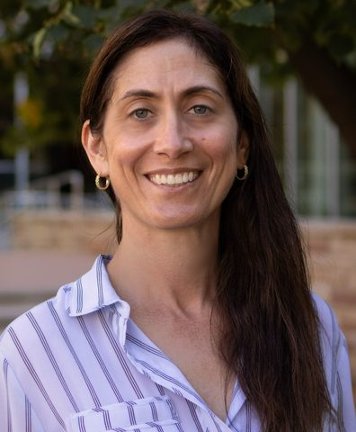
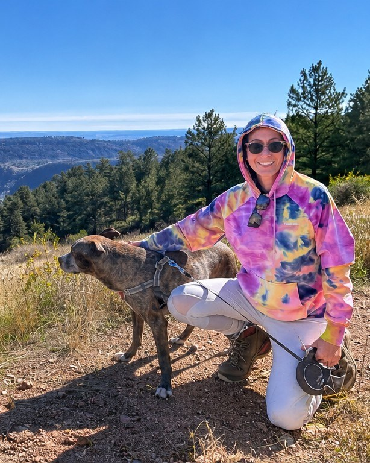

Data Centers on Colorado's Front Range: Assessing Regional Economic and Environmental Impacts
With Anders Fremstad. A working paper for Colorado State University's Regional Economic Development Institute (REDI).
Economics · Public Finance · History of Economic Thought
Ph.D. student in economics, Colorado State University
I teach economics, business and political science at the community college, university and MBA levels, both in person and online.
About

I've been teaching college students for more than twenty years, and I still love it. I've taught economics, business, political science and writing at the community college, university and MBA levels, both in person and online. Today I teach online economics courses at the MBA and undergraduate levels, and I help teach principles of macroeconomics at Colorado State University, where I'm currently working on my Ph.D. in economics.
Earlier in my career I worked in digital marketing and data analytics at Beckman Coulter Life Sciences (Danaher) and in online communications at the United Nations Foundation. Through the U.S. State Department's Mandela Washington Fellowship, I also had the chance to lead entrepreneurship workshops in Nigeria and Ethiopia, which remain some of my favorite teaching experiences.
When I'm not working, I enjoy gardening, cooking, hiking and spending time with my dog, Quinn.

Teaching
Courses: Economics for Managers (MBA) · Statistical Analysis for Economics and Business · Geoeconomics (MBA) · Ethical Analysis of Economic Policy (MBA) · Strategic Management · Sustainable Business (graduate) · Social Entrepreneurship (graduate) · International Business · Business Law · Business Ethics · Personal Finance · U.S. Government and Politics · International Relations · U.S. Foreign Policy · Global Environmental Politics
Tools: Canvas, D2L Brightspace and Blackboard; Stata, R, SPSS, JMP, Excel and Python.
Research
Research interests: the history of economic thought, macroeconomics and public finance. In 2026 I received the Omicron Delta Epsilon Best Graduate Paper Award.
With Anders Fremstad. A working paper for Colorado State University's Regional Economic Development Institute (REDI).
Contact
I'm based in Fort Collins and available for online teaching. The best way to reach me is by email.